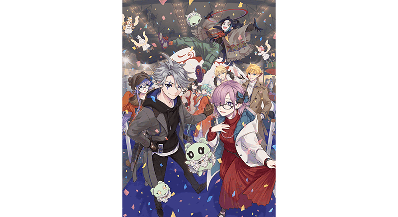

為了記念「FGO 冬季派對 2022-2023」的宮城會場舉辦，舉辦「FGO 冬季派對 2022-2023」宮城會場舉辦記念宣傳活動！
還有，在官方推特有刊載「FGO 冬季派對 2022-2023」的活動情報等。
■「Fate/Grand Order」官方推特
@fgoproject
■「FGO 冬季派對 2022-2023」特設サイト
https://fes.fate-go.jp/winter/
◆舉辦期間◆
2023年2月2日(四) 3:00～2月5日(日) 2:59

介紹「FGO 冬季派對 2022-2023」宮城會場的活動內容！
「FGO 冬季派對 2022-2023」宮城會場中，預定將播送由豪華來賓和營運團隊帶來的直播。
宮城會場的來賓為赤羽根健治、伊東健人、古川慎！
並且「Fate/Grand Order」的最新情報也稍微！？
◆「FGO 冬季派對 2022-2023」宮城會場(2023年2月4日(六) 10:30～)◆ 與FGO有緣的豪華來賓陣和FGO開發・營運團隊以直播共同送上有關「Fate/Grand Order」的情報・趣事等！
■FGO綜藝談話(2023年2月4日(六) 10:30～)
出演:赤羽根健治、伊東健人、古川慎
※會在官方推特及下述URL轉播。
・niconico生放送 https://live.nicovideo.jp/watch/lv339967262
・ABEMA https://abema.tv/channels/abema-anime-3/slots/EEj39BshPxLqmZ
・YouTube Live https://youtu.be/_36Wye6t6_w
■FGO工作人員談話(2023年2月4日(六) 12:00～)
出演:FGO開發・營運團隊
■挑戰關卡決勝舞台(2023年2月4日(六) 13:20～)
■FGO特別談話in宮城(2023年2月4日(六) 14:40～)
播送的推特達成3萬轉推的話，贈送聖晶石6個！
出演:赤羽根健治、伊東健人、古川慎
※會在官方推特及下述URL轉播。
・niconico生放送 https://live.nicovideo.jp/watch/lv339967322
・ABEMA https://abema.tv/channels/abema-anime-3/slots/97sEsCAwCsqZqZ
・YouTube Live https://youtu.be/oTI3fy1Zpj0
「FGO 冬季派對 2022-2023」活動頁面
https://fes.fate-go.jp/winter/stage/


下述的期間中，為了記念「FGO 冬季派對 2022-2023」宮城會場舉辦，實施給予宣傳活動限定概念禮裝的「FGO 冬季派對 2022-2023」宮城會場舉辦前夕登入獎勵！
在下述期間中登入3次(1天算1次)的話，贈送最多黃金果實3個！
◆舉辦期間◆
2023年2月2日(四) 3:00～2月5日(日) 2:59
※在舉辦期間內合計3天內登入即可領取所有登入獎勵。
◆贈送對象◆
2023年2月4日(六) 2:59前通過「特異點F 炎上汙染都市 冬木」的御主對象
※上述時間前，在管理室(ターミナル)畫面的關卡橫幅必須要有「CLEAR」的文字顯示。
◆登入獎勵內容◆
| 登入次數 | 贈送內容 | |
|---|---|---|
| 第1次 |

|
黃金果實 1個 |
| 第2次 |
|
黃金果實 1個 |
| 第3次 |
|
黃金果實 1個 |
※登入獎勵會在每天3:00配發。 ※合計3天內能領取，但根據成為贈送對象的時間點，可能無法到此上限。
自2023年2月4日(六) 14:40，官方推特上會播送與FGO有緣的豪華來賓陣共同送上「FGO特別談話in宮城」。
播送影片的推特轉推數，於下述的期間內達成3萬轉推的話，贈送聖晶石6個！
■「Fate/Grand Order」官方推特
@fgoproject
◆舉辦期間◆
2023年2月4日(六) 14:40(預定)～「FGO 冬季派對 2022-2023」宮城會場的配信結束前
◆配發預定日◆
2023年2月5日(日) 3:00～2月12日(日) 2:59的期間中，在初次進行登入的時間點，贈予到禮物箱。
◆贈送對象◆
2023年2月5日(日) 2:59前通過「特異點F 炎上汙染都市 冬木」的御主對象
※上述時間前，在管理室(ターミナル)畫面的關卡橫幅必須要有「CLEAR」的文字顯示。
| 達成目標(轉推數) | 達成報酬 | |
|---|---|---|
| 3萬轉推 |

|
聖晶石 6個 |
※在舉辦期間內無法達到達成目標的轉推數及在期間內未登入的情況，無法領取達成報酬。